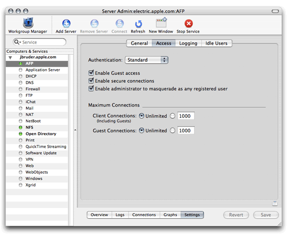
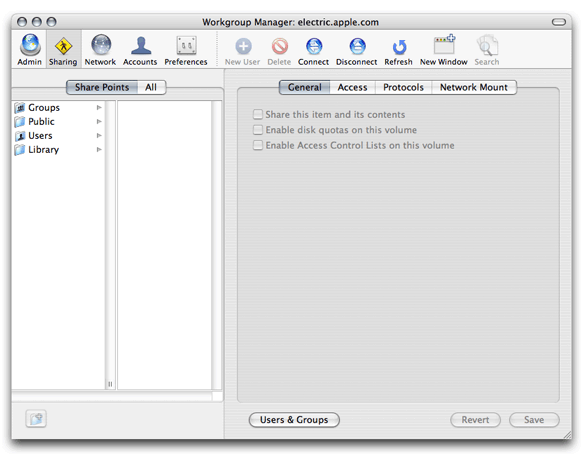
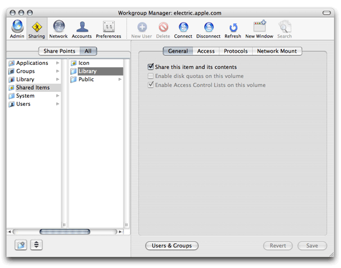
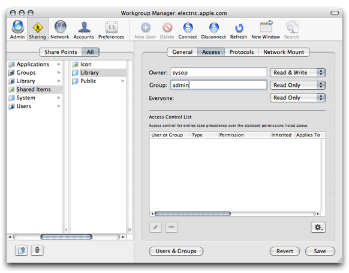
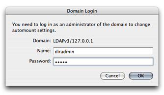
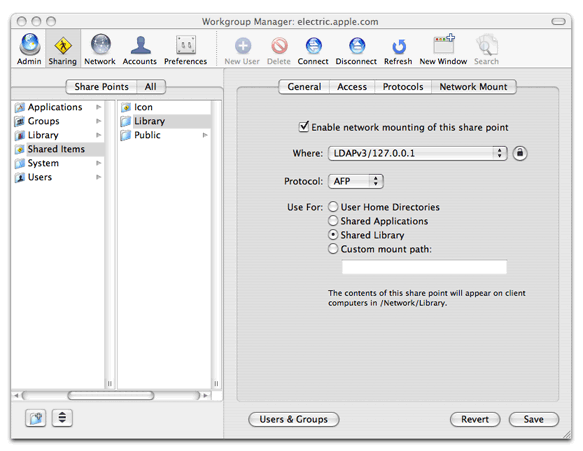
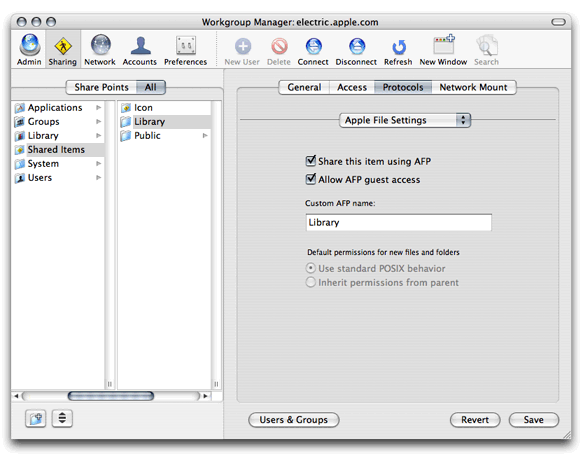

Setting Up a Network Library
A network library allows for shared resources to be centrally managed and available to all Macintosh users bound to an Open Directory Master server. For example, a resource such as fonts, can be placed in a network library so they are available to end users bound to the Open Directory Master server. This allows users to use the shared resources with out having to install them. This article is a step-by-step guide to create a network library. For more information about the library structure see The Library Directory.
Creating a network library requires you to make some configuration changes to your Open Directory Master so it can provide clients bound to the Open Directory Master the information about the network library. The following steps walk you though the changes required to create a network library.
On the server where you want the network library to reside, create, in
/Shared Items, a directory namedLibrary. This directory serves as the share point for the network library.The newly created library directory is the location where you place any resource that should be shared to all of the clients utilizing the network library. The hierarchy of directories in the network library is the same as in
~/Libraryor/Library. For example, if you needed to share a font with all network library users, you create a directory namedFontsin/Shared Items/Library. Then you place the fonts to share inside of/Shared Items/Library/Fonts.Using Server Admin, connect to the server and select AFP in the Computers & Services list. Make sure the AFP service is running. Click Settings, then click Access, and make sure “Enable Guest access” is selected.
In Workgroup Manager, connect to the server and click Sharing.
Click All and select the directory
/Shared Items/Library. In the General pane, select the button next to "Share this item and its contents.”In the Access pane, specify the share point owner and group names by typing names into those fields or by dragging names from the drawer that opens when you click Users & Groups. Set Owner permissions to Read & Write, set Group permissions and Everyone permissions to Read Only. Click save.
Click network Mount and authenticate as an administrator of the directory domain where the network library resides. If the server where the network library mount point is also the Open Directory Master for the network, continue to step 7. If the network library mount point is on a different server then the ODM, use the Where pop-up menu to choose the directory domain in which the network library mount record resides. Then click the lock and authenticate as an administrator of the directory domain.
Select “Enable network mounting of this share point” and “Use For Shared Library.” Click All (above the list on the left) and select the directory
/Shared Items/Library.Click Protocols, choose Apple File Settings from the pop-up menu, and make sure “Share this item using AFP” and “Allow AFP guest access” are selected. (They are selected by default.)

The network library is mounted when the client computers first turn on. Any client turned on before the configuration of the network Library is finished must be rebooted to gain access to the resources in the network Library.
© 2007 Apple Inc. All Rights Reserved. (Last updated: 2007-05-23)